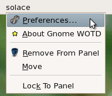
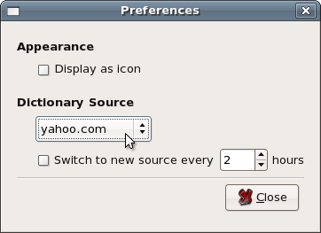
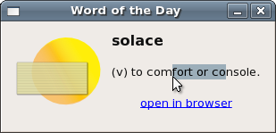

Grow your wordiness
No one likes to be lost in a sea of unknown words. With GNOME Word of the Day Applet, your vocabulary will evince perennial growth. It's a must when preparing for the SAT or GRE tests and for improving both reading comprehension and writing precision.
A word a day on your desktop
GNOME Word of the Day sits in your panel area as a word or an icon.

You can retrieve words from many online sources, and have them cycled through every few hours.
 
Get it
Download the latest 0.2 tarball or deb.
Installing from a deb (Ubuntu and Debian)
sudo dpkg -i gnomewotdapplet_0.2-1_all.deb
Installing from source
tar -xvzf gnomewotdapplet-0.2.tar.gz
cd gnomewotdapplet-0.2
./configure --prefix=/usr
make
sudo make install
About the project
GNOME Word of the Day is a .NET application written on top of Mono targetted for the GNOME desktop, released under the MIT license. It's written by Phil Crosby and Mike Quinn.
Developers: instructions for checking out the source.